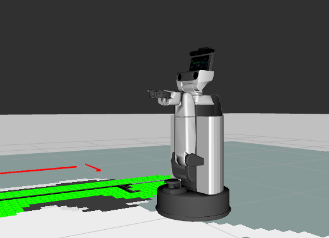
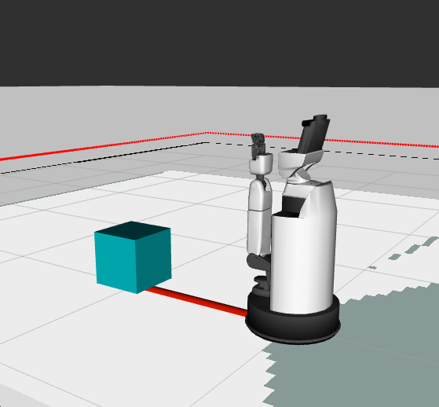
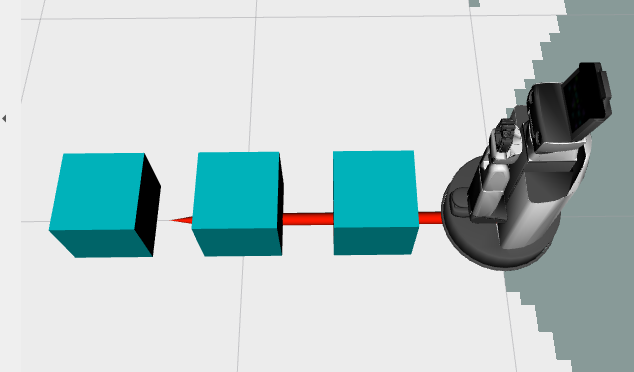
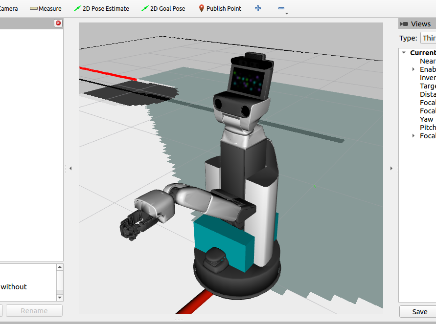
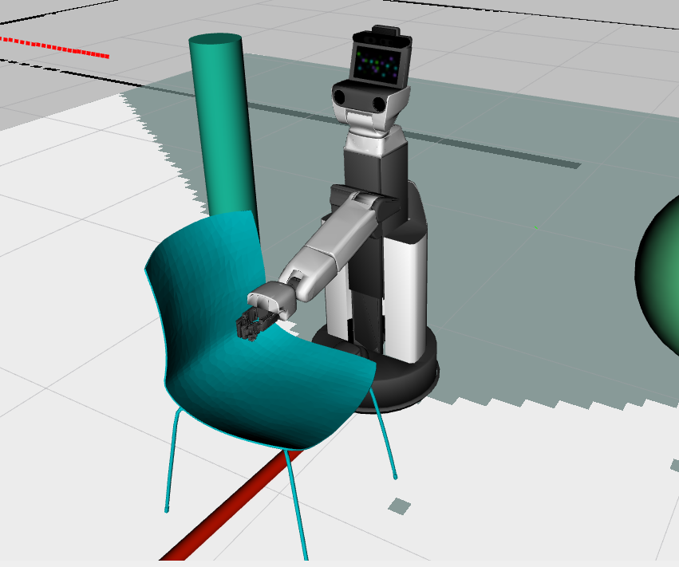
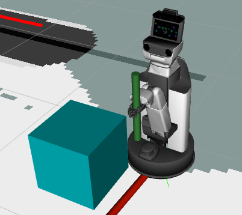
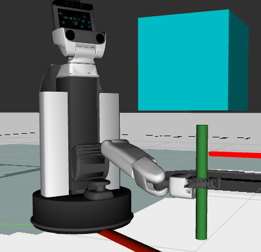
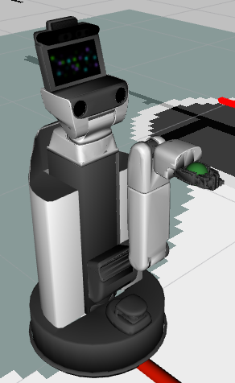
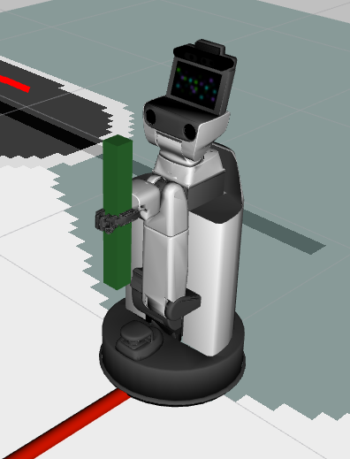

3.2.2. 応用編#
3.2.2.1. 可動範囲の制限#
手先の可動範囲を制限する方法を説明します。
以下を実行し、可動範囲の制限設定を追加してください。
In []: from tmc_planning_msgs.msg import TaskSpaceRegion In []: constraint_tsr = TaskSpaceRegion() In []: constraint_tsr.end_frame_id = whole_body.end_effector_frame In []: constraint_tsr.origin_to_tsr.orientation.w = 1.0 In []: constraint_tsr.tsr_to_end = geometry.tuples_to_pose(whole_body.get_end_effector_pose('odom')) In []: constraint_tsr.min_bounds = [-100.0, -100.0, -100.0, -math.pi, -math.pi, -math.pi] In []: constraint_tsr.max_bounds = [100.0, 100.0, 100.0, math.pi, math.pi, math.pi] In []: whole_body.constraint_tsrs = [constraint_tsr]
以下を実行し、現在の設定を確認してください。
In []: whole_body.constraint_tsrs
出力結果は説明のため、一部加工しています。
Out[]: [tmc_planning_msgs.msg.TaskSpaceRegion(end_frame_id='hand_palm_link', origin_to_tsr=geometry_msgs.msg.Pose(position=geometry_msgs.msg.Point(x=0.0, y=0.0, z=0.0), orientation=geometry_msgs.msg.Quaternion(x=0.0, y=0.0, z=0.0, w=1.0)), tsr_to_end=geometry_msgs.msg.Pose(position=geometry_msgs.msg.Point(x=0.2865095118562522, y=0.07799999989169142, z=0.6731118874800364), orientation=geometry_msgs.msg.Quaternion(x=0.7068251814047126, y=-6.870388518802683e-11, z=0.7073882688680914, w=-2.782076762579085e-11)), min_bounds=array([-100. , -100. , -100. , -3.14159265, -3.14159265, -3.14159265]), max_bounds=array([100. , 100. , 100. , 3.14159265, 3.14159265, 3.14159265]), rotation_first=False)]
以下に、「min_bounds」と「max_bounds」の配列の内容を記載します。
インデックス
方向
0
X
1
Y
2
Z
3
Roll (X軸方向の傾き)
4
Pitch (Y軸方向の傾き)
5
Yaw (Z軸方向の傾き)
「Roll」、「Pitch」、「Yaw」は -π 〜 π [rad] で制限なしの設定となります。
以下を実行し、手先をRoll方向に回転させてください。
In []: whole_body.move_to_joint_positions({'wrist_roll_joint': 3.0})

手先が裏返ったことを確認してください。
一度姿勢を元に戻してからRoll方向の制限を1.0に設定し、再度同じ指示を出してください。
In []: whole_body.move_to_neutral() In []: constraint_tsr.max_bounds[3] = 1.0 In []: whole_body.move_to_joint_positions({'wrist_roll_joint': 3.0})
目標姿勢が制限の範囲外となるため、次のようなエラーが確認できます。
Out[]: : : MotionPlanningError: GOAL_IN_COLLISION (Fail to plan change_joint_state)
{kind=link}
3.2.2.2. 手先座標系の変更#
手先基準の動作において、基準となるフレームを変更することができます。
以下を実行し、手先座標系として選択可能なHSRのフレームを確認してください。
In []: whole_body.end_effector_frames
Out[]: ('hand_palm_link', 'hand_l_finger_vacuum_frame')
以下を実行し、現在手先座標系として選択されているフレームを確認してください。
In []: whole_body.end_effector_frame
Out[]: 'hand_palm_link'
以下を実行し、「hand_l_finger_vacuum_frame」のz軸にそって0.3[m]動作させてください。 動作する方向は、指先の吸着パッドの方向になります。
In []: whole_body.end_effector_frame = 'hand_l_finger_vacuum_frame' In []: whole_body.move_end_effector_by_line((0, 0, 1), 0.3) In []: whole_body.end_effector_frame = 'hand_palm_link'

3.2.2.3. tfを用いた手先基準での動作#
以下を実行し、初期姿勢に戻してください。
In []: whole_body.move_to_go() In []: omni_base.go_abs(0.0, 0.0, 0.0, 10.0) In []: whole_body.move_to_neutral()
新しいターミナルで環境変数を設定後、以下を実行し、「my_frame」を1つ作成してください。
ROS_DOMAIN_IDには、シミュレータ起動時に設定した値をセットしてください。$ export ROS_DOMAIN_ID=XXX $ source /opt/ros/<ROS_DISTRO>/setup.bash
$ ros2 run tf2_ros static_transform_publisher 2 0 0.5 3.14 -1.57 0 map my_frame
以下を実行し、「hand_palm_link」を「my_frame」と一致させてください。
In []: whole_body.end_effector_frame = 'hand_palm_link' In []: whole_body.move_end_effector_pose(geometry.pose(), 'my_frame')
これで「my_frame」と手先が一致するような動作をします。

手先の位置を「my_frame」基準でz軸方向やx軸方向に移動させます。
以下を実行し、「my_frame」の手前0.2[m]に手先を移動させてください。
「Blue:z軸」が進行方向となるため、
geometry.pose(z=-0.2)を指定します。In []: whole_body.move_end_effector_pose(geometry.pose(z=-0.2), 'my_frame')

以下を実行し、「my_frame」の上0.2[m]に手先を移動させてください。
「Red:x軸」が進行方向となるため、
geometry.pose(x=0.2)を指定します。In []: whole_body.move_end_effector_pose(geometry.pose(x=0.2), 'my_frame')

以下を実行し、手先を「Green:y軸」まわりに1.57[rad]回転させてください。
軸まわりの回転はそれぞれ、「x軸:ei」「y軸:ej」「z軸:ek」で与えることが出来ます。
In []: whole_body.move_end_effector_pose(geometry.pose(x=0.2, ej=-1.57), 'my_frame')

3.2.2.4. 動作後に手先を見る設定#
whole_body.move_end_effector_ に続くコマンドを実行し姿勢遷移させるとき、遷移後に手先を見るよう設定することができます。
whole_body.looking_hand_constraint はデフォルトで False になっています。
以下を実行し、動作が変化する様子を確認してください。
looking_hand_constraint = Trueの場合In []: whole_body.move_to_neutral() In []: whole_body.looking_hand_constraint = True In []: whole_body.move_end_effector_pose(geometry.pose(z=1.0), ref_frame_id='hand_palm_link')
looking_hand_constraint = Falseの場合In []: whole_body.move_to_neutral() In []: whole_body.looking_hand_constraint = False In []: whole_body.move_end_effector_pose(geometry.pose(z=1.0), ref_frame_id='hand_palm_link')

3.2.2.5. 台車と腕動作の割合変更#
HSRは手先の位置姿勢遷移に台車と腕関節の両方を使います。
本節では、「台車を大きく動作させ腕関節の動作を小さくする」設定や、 逆に「腕関節を大きく動作させ台車の動作を小さくする」設定について説明します。 動作の割合は、並進と回転を別々に設定できます。
並進の設定方法は以下になります。
In []: whole_body.linear_weight = (weight)
(weight)には0.1~100程度の数字を入れてください。 数字が大きいと台車の動作が小さくなります。以下の手順を実施し、動作が変化する様子を確認してください。
以下を実行し、初期姿勢に戻してください。
In []: whole_body.move_to_go() In []: omni_base.go_abs(0,0,0)
whole_body.linear_weight = 1.0の場合In []: whole_body.move_to_neutral() In []: whole_body.linear_weight = 1.0 In []: whole_body.move_end_effector_pose(geometry.pose(z=1.0), ref_frame_id='hand_palm_link') In []: whole_body.move_to_go() In []: omni_base.go_abs(0,0,0)
whole_body.linear_weight = 100.0の場合上記のコマンドの
whole_body.linear_weight = 1.0を100.0に変更して実行してください。whole_body.linear_weight = 0.1の場合上記のコマンドの
whole_body.linear_weight = 1.0を0.1に変更して実行してください。以下を実行し、
whole_body.linear_weightの値をもとに戻してください。In []: whole_body.linear_weight = 1.0
回転の設定方法は以下になります。
In []: whole_body.angular_weight = (weight)
(weight)には0.1~100程度の数字を入れてください。 数字が大きいと台車の動作が小さくなります。以下の手順を実施し、動作が変化する様子を確認してください。
以下を実行し、初期姿勢に戻してください。
In []: whole_body.move_to_go() In []: omni_base.go_abs(0,0,0)
whole_body.angular_weight = 1.0の場合In []: whole_body.move_to_neutral() In []: whole_body.angular_weight = 1.0 In []: whole_body.move_end_effector_pose(geometry.pose(z=0.5, ei=math.radians(90)), ref_frame_id='hand_palm_link') In []: whole_body.move_to_go() In []: omni_base.go_abs(0,0,0)
whole_body.angular_weight = 100.0の場合上記のコマンドの
whole_body.angular_weight = 1.0を100.0に変更して実行してください。whole_body.angular_weight = 0.1の場合上記のコマンドの
whole_body.angular_weight = 1.0を0.1に変更して実行してください。以下を実行し、
whole_body.angular_weightの値をもとに戻してください。In []: whole_body.angular_weight = 1.0
3.2.2.6. 干渉回避#
本節では、HSRが家具などの外部環境と衝突しないように動作する方法を説明します。
以下を実行し、初期姿勢に戻してください。
In []: whole_body.move_to_go() In []: omni_base.go_abs(0.0, 0.0, 0.0, 10.0) In []: whole_body.move_to_neutral()
以下を実行し、箱を追加してください。
In []: collision_world.add_box(x=0.3, y=0.3, z=0.3, pose=geometry.pose(x=1.0, y=0.0, z=0.15, ek=0.0), frame_id='map')

引数は、以下のようになっています。
Args: x (float): Length along with X-axis [m] y (float): Length along with Y-axis [m] z (float): Length along with Z-axis [m] pose (Tuple[Vector3, Quaternion] or List of Tuple[Vector3, Quaternion]): A pose of a new object from the frame ``frame_id`` frame_id (str): A reference frame of a new object name (str): A name of a new object timeout (float): Wait known object list for this value [sec]家具の様に環境に対して動作しないものは
frame_id='map'と設定すれば表現できます。 また、動作するものについて、基準となるフレームをframe_idに設定することで、 そのフレームとともに動く物体が表現出来ます。注釈
引数
poseは、リストで複数の位置姿勢が指定可能です。以下のように引数
poseにgeometry.poseで位置姿勢を３つ指定すると、同じ形状の箱が３つ追加されます。In []: collision_world.add_box(x=0.3, y=0.3, z=0.3, pose=[geometry.pose(x=0.5, z=0.15),geometry.pose(x=1.0, z=0.15),geometry.pose(x=1.5, z=0.15)], frame_id='map')

この箱を干渉回避に利用する場合としない場合で動作がどのように変化するか確認してください。
干渉回避は
whole_body.collision_worldに干渉チェック環境を設定することで有効になります。干渉回避なしの場合
In []: whole_body.collision_world = None In []: whole_body.move_end_effector_pose(geometry.pose(z=1.3), 'hand_palm_link')
この場合は画像の様にHSRが箱をすり抜けてしまいます。

以下を実行し、初期姿勢に戻してください。
In []: whole_body.move_to_go() In []: omni_base.go_abs(0,0,0) In []: whole_body.move_to_neutral()
干渉回避ありの場合
In []: whole_body.collision_world = collision_world In []: whole_body.move_end_effector_pose(geometry.pose(z=1.5), 'hand_palm_link')
この場合は箱を避けHSRが動作します。

他にも様々な物体を配置するために、HSRを元の場所に戻し、物体をすべて削除します。 以下を実行してください。
In []: collision_world.remove_all() In []: whole_body.move_to_go() In []: omni_base.go_abs(0,0,0) In []: whole_body.move_to_neutral()
以下を実施し、球と円柱を配置してください。
球
In []: collision_world.add_sphere(radius=0.3, pose=geometry.pose(x=1.0, y=1.0, z=0.5))
円柱
In []: collision_world.add_cylinder(radius=0.1, length=1.0, pose=geometry.pose(x=1.0, y=-1.0, z=0.5))

ここまでは基本的な図形を配置してきましたが、もう少し複雑な形状を扱いたいときは三角形メッシュのファイルを指定します。 ファイルの形式はSTL (Standard Triangulated Language) をサポートしています。
サンプルの
椅子モデルをダウンロードしてください。ダウンロードしたファイルは
/tmpに移動させてください。コンソールに戻り、以下を実行して環境に椅子モデルを追加してください。
In []: collision_world.add_mesh(filename='/tmp/chair.stl', pose=geometry.pose(x=2.0, ei=math.radians(90)), frame_id='map', name='chair')

以下を実行し、椅子の下に手先を移動させてください。
In []: whole_body.move_end_effector_pose(geometry.pose(x=2.0, z=0.2, ei=math.radians(-180), ej=math.radians(-90)),ref_frame_id='map')

以下を実行し、椅子の上に手先を移動させてください。
In []: whole_body.move_end_effector_pose(geometry.pose(x=2.0, z=0.6, ei=math.radians(-180), ej=math.radians(-90)),ref_frame_id='map')
干渉を回避した動作が確認できます。

HSRを元の場所に戻し、物体をすべて削除します。 以下を実行してください。
In []: collision_world.remove_all() In []: whole_body.move_to_go() In []: omni_base.go_abs(0, 0, 0) In []: whole_body.move_to_neutral()
把持物も合わせて干渉を回避した動作を行うことができます。
以下を実行し、円柱を把持してください。
In []: collision_world.add_attached_cylinder(radius=0.02, length=0.4, pose=geometry.pose(z=0.025, ej=math.radians(90)), timeout=3.0)
図のように手先で円柱を把持した状態になります。

以下を実行し、把持したまま移動させてください。
whole_body.move_end_effector_by_line((0, 0, 2), 0.3)
以下を実行し、マップ上に箱を追加してください。
In []: collision_world.add_box(x=0.3, y=0.3, z=0.3, pose=geometry.pose(x=1.0, y=0.0, z=0.65), timeout=3.0)

以下を実行し、手先を箱の下に移動させてください。
In []: whole_body.move_end_effector_pose(geometry.pose(1.0, 0.0, 0.25, ej=math.pi / 2.0), 'map')

把持物と箱の干渉を回避した動作が確認できます。
円柱以外の物も把持することができます。 以下を実行し、物体の削除と球の把持を行ってください。
In []: collision_world.remove_all() In []: whole_body.move_to_neutral() In []: collision_world.add_attached_sphere(radius=0.03, pose=geometry.pose(z=0.025), timeout=3.0)

以下を実行し、箱を把持してください。
In []: collision_world.remove_all() In []: collision_world.add_attached_box(x=0.4, y=0.04, z=0.04, pose=geometry.pose(z=0.025), timeout=3.0)

以下を実行し、椅子を把持してください。
In []: collision_world.remove_all() In []: collision_world.add_attached_mesh(filename='/tmp/chair.stl', pose=geometry.pose(x=-0.55, y=-0.16, z=0.25, ej=math.radians(-90), ek=math.radians(-90)), name='chair')

{kind=link}
{kind=link}
{kind=link}
{kind=link}
{kind=link}
{kind=link}
{kind=link}
{kind=link}
3.2.2.7. 非同期動作#
非同期動作では、動作状況の確認や動作中断が出来ます。
関節を非同期で動作するためには、引数の plan_only を True にしてください。
ここでは、 move_to_go を非同期で動作させます。
計画した軌道を whole_body.execute の引数に入れ、動作を開始してください。
In []: traj = whole_body.move_to_go(plan_only=True)
In []: whole_body.execute(traj)
動作中か確認する
In []: whole_body.is_moving()
動作を中止する
In []: whole_body.cancel_goal()
動作が成功したか確認する
In []: whole_body.is_succeeded()
動作終了まで待機する
In []: whole_body.wait_goal()